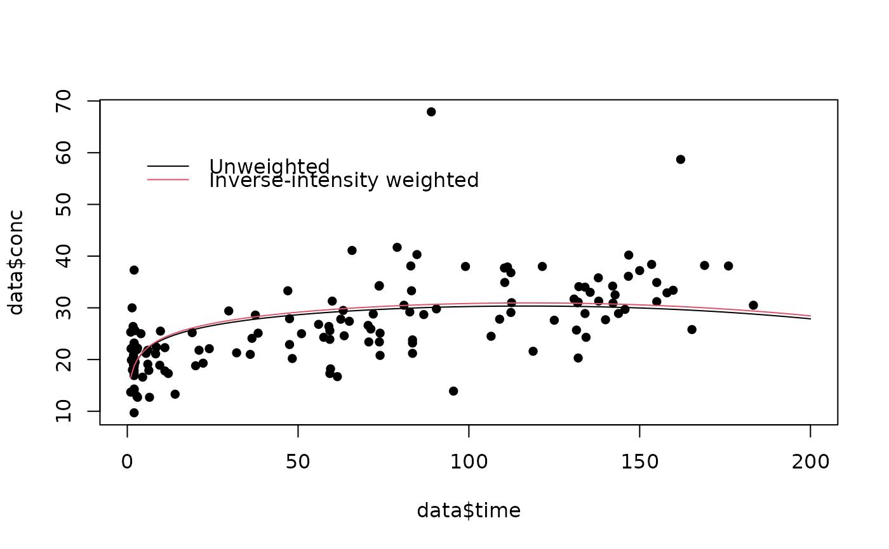

Fit an inverse-intensity weighted GEE.
iiwgee.RdImplements inverse-intensity weighted GEEs as first described by Lin, Scharfstein and Rosenheck (2004). A Cox proportional hazards model is applied to the visit intensities, and the hazard multipliers are used to compute inverse-intensity weights. Using the approach described by Buzkova and Lumley (2007) avoids the need to compute the baseline hazard.
Usage
iiwgee(
formulagee,
formulaph,
formulanull = NULL,
data,
id,
time,
event,
family = gaussian,
lagvars,
invariant = NULL,
maxfu,
lagfirst,
first,
stabilize.loess = FALSE
)Arguments
- formulagee
the formula for the GEE model to be fit. The syntax used is the same as in glm
- formulaph
the formula for the proportional hazards model for the visit intensity that will be used to derive inverse-intensity weights. The formula should usually use the counting process format (i.e. Surv(start,stop,event))
- formulanull
if stabilised weights are to be used, the formula for the null model used to stabilise the weights
- data
data frame containing the variables in the model
- id
character string indicating which column of the data identifies subjects
- time
character string indicating which column of the data contains the time at which the visit occurred
- event
character string indicating which column of the data indicates whether or not a visit occurred. If every row corresponds to a visit, then this column will consist entirely of ones
- family
family to be used in the GEE fit. See geeglm for documentation
- lagvars
a vector of variable names corresponding to variables which need to be lagged by one visit to fit the visit intensity model. Typically time will be one of these variables. The function will internally add columns to the data containing the values of the lagged variables from the previous visit. Values of lagged variables for a subject's first visit will be set to NA. To access these variables in specifying the proportional hazards formulae, add ".lag" to the variable you wish to lag. For example, if time is the variable for time, time.lag is the time of the previous visit
- invariant
a vector of variable names corresponding to variables in data that are time-invariant. It is not necessary to list every such variable, just those that are invariant and also included in the proportional hazards model
- maxfu
the maximum follow-up time(s). If everyone is followed for the same length of time, this can be given as a single value. If individuals have different follow-up times, Otherwise, maxfu should be a dataframe with the first column specifying subject identifiers and the second giving the follow-up time for each subject.
- lagfirst
A vector giving the value of each lagged variable for the first time within each subject. This is helpful if, for example, time is the variable to be lagged and you know that all subjects entered the study at time zero
- first
logical variable. If TRUE, the first observation for each individual is assigned an intensity of 1. This is appropriate if the first visit is a baseline visit at which recruitment to the study occurred; in this case the baseline visit is observed with probability 1.
- stabilize.loess
logical variable. If TRUE, additional stabilization is done by fitting a loess of the (stabilized) weights versus time, then dividing the observed weights by the predicted values
Value
a list, with the following elements:
- geefit
the fitted GEE, see documentation for geeglm for details
- phfit
the fitted proportional hazards model, see documentation for coxph for details
Details
Let the outcome of interest be \(Y\) and suppose that subject i has \(j^{th}\) observation at \(T_{ij}\). Let \(N_i(t)\) be a counting process for the number of observations for subject i up to and including time t. Suppose that \(N_i\) has intensity \(\lambda\) given by $$\lambda_i(t)=\lambda0(t)exp(Z_i(t)\gamma).$$ Then the inverse-intensity weights are $$exp(-Z_i(t)\gamma).$$ If \(Y_i\) is the vector of observations for subject \(i\), to be regressed onto \(X_i\) (i.e. \(E(Y_i|X_i)=\mu(X_i;\beta)\) with \(g(\mu(X_i;beta)=X_i\beta\), then the inverse-intensity weighted GEE equations are $$\sum_i \frac{\partial\mu_i}{\partial\beta}V_i^{-1}\Delta_i(Y_i X_i\beta)=0$$, where \(\Delta_i\) is a diagonal matrix with \(j^{th}\) entry equal to \(\exp(-Z_i(T_{ij})\gamma)\) and $V_i$ is the working variance matrix. Warning: Due to the way some gee functions incorporate weights, if using inverse-intensity weighting you should use working independence.
References
Lin H, Scharfstein DO, Rosenheck RA. Analysis of Longitudinal data with Irregular, Informative Follow-up. Journal of the Royal Statistical Society, Series B (2004), 66:791-813
Buzkova P, Lumley T. Longitudinal data analysis for generalized linear models with follow-up dependent on outcome-related variables. The Canadian Journal of Statistics 2007; 35:485-500.
See also
Other iiw:
iiw(),
iiw.weights()
Examples
library(nlme)
data(Phenobarb)
library(survival)
library(geepack)
library(data.table)
Phenobarb$event <- 1-as.numeric(is.na(Phenobarb$conc))
data <- Phenobarb
data <- data[data$event==1,]
data$id <- as.numeric(data$Subject)
data <- data[data$time<16*24,]
miiwgee <- iiwgee(conc ~ I(time^3) + log(time),
Surv(time.lag,time,event)~I(conc.lag>0 & conc.lag<=20) +
I(conc.lag>20 & conc.lag<=30) + I(conc.lag>30)+ cluster(id),
id="id",time="time",event="event",data=data,
invariant="id",lagvars=c("time","conc"),maxfu=16*24,lagfirst=0,first=TRUE)
summary(miiwgee$geefit)
#>
#> Call:
#> geeglm(formula = formulagee, family = family, data = data, weights = useweight,
#> id = iddup, corstr = "independence")
#>
#> Coefficients:
#> Estimate Std.err Wald Pr(>|W|)
#> (Intercept) 1.65e+01 1.02e+00 262.0 <2e-16 ***
#> I(time^3) -6.63e-07 7.65e-08 75.2 <2e-16 ***
#> log(time) 3.25e+00 4.05e-01 64.4 1e-15 ***
#> ---
#> Signif. codes: 0 ‘***’ 0.001 ‘**’ 0.01 ‘*’ 0.05 ‘.’ 0.1 ‘ ’ 1
#>
#> Correlation structure = independence
#> Estimated Scale Parameters:
#>
#> Estimate Std.err
#> (Intercept) 49.1 17
#> Number of clusters: 59 Maximum cluster size: 6
summary(miiwgee$phfit)
#> Call:
#> coxph(formula = Surv(time.lag, time, event) ~ I(conc.lag > 0 &
#> conc.lag <= 20) + I(conc.lag > 20 & conc.lag <= 30) + I(conc.lag >
#> 30), data = datacox, cluster = id)
#>
#> n= 154, number of events= 95
#> (59 observations deleted due to missingness)
#>
#> coef exp(coef) se(coef) robust se z
#> I(conc.lag > 0 & conc.lag <= 20)TRUE 0.738 2.091 0.340 0.307 2.41
#> I(conc.lag > 20 & conc.lag <= 30)TRUE 0.326 1.386 0.300 0.285 1.14
#> I(conc.lag > 30)TRUE NA NA 0.000 0.000 NA
#> Pr(>|z|)
#> I(conc.lag > 0 & conc.lag <= 20)TRUE 0.016 *
#> I(conc.lag > 20 & conc.lag <= 30)TRUE 0.253
#> I(conc.lag > 30)TRUE NA
#> ---
#> Signif. codes: 0 ‘***’ 0.001 ‘**’ 0.01 ‘*’ 0.05 ‘.’ 0.1 ‘ ’ 1
#>
#> exp(coef) exp(-coef) lower .95 upper .95
#> I(conc.lag > 0 & conc.lag <= 20)TRUE 2.09 0.478 1.147 3.81
#> I(conc.lag > 20 & conc.lag <= 30)TRUE 1.39 0.722 0.792 2.42
#> I(conc.lag > 30)TRUE NA NA NA NA
#>
#> Concordance= 0.559 (se = 0.022 )
#> Likelihood ratio test= 5.12 on 2 df, p=0.08
#> Wald test = 6.69 on 2 df, p=0.04
#> Score (logrank) test = 5.31 on 2 df, p=0.07, Robust = 7.18 p=0.03
#>
#> (Note: the likelihood ratio and score tests assume independence of
#> observations within a cluster, the Wald and robust score tests do not).
# compare to results without weighting
data$time3 <- (data$time^3)/mean(data$time^3)
data$logtime <- log(data$time)
m <- geeglm(conc ~ time3 + logtime , id=Subject, data=data); print(summary(m))
#>
#> Call:
#> geeglm(formula = conc ~ time3 + logtime, data = data, id = Subject)
#>
#> Coefficients:
#> Estimate Std.err Wald Pr(>|W|)
#> (Intercept) 16.592 0.991 280.1 <2e-16 ***
#> time3 -1.466 0.159 85.4 <2e-16 ***
#> logtime 3.106 0.349 79.3 <2e-16 ***
#> ---
#> Signif. codes: 0 ‘***’ 0.001 ‘**’ 0.01 ‘*’ 0.05 ‘.’ 0.1 ‘ ’ 1
#>
#> Correlation structure = independence
#> Estimated Scale Parameters:
#>
#> Estimate Std.err
#> (Intercept) 46.9 14.5
#> Number of clusters: 59 Maximum cluster size: 6
time <- (1:200)
unweighted <- cbind(rep(1,200),time^3/mean(data$time^3),log(time))%*%m$coefficients
weighted <- cbind(rep(1,200),time^3/mean(data$time^3),log(time))%*%miiwgee$geefit$coefficients
plot(data$time,data$conc,xlim=c(0,200),pch=16)
lines(time,unweighted,type="l")
lines(time,weighted,col=2)
legend (0,60,legend=c("Unweighted","Inverse-intensity weighted"),col=1:2,bty="n",lty=1)
